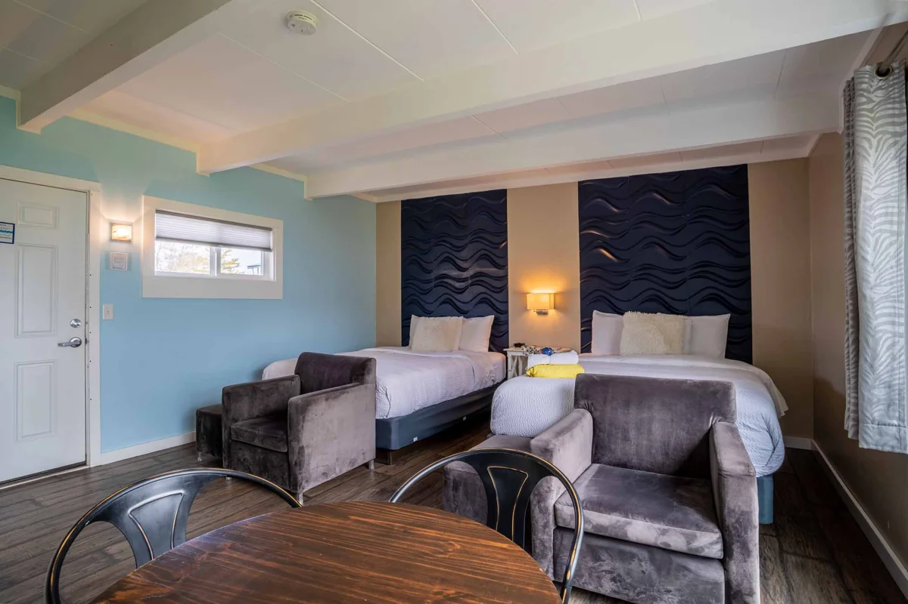
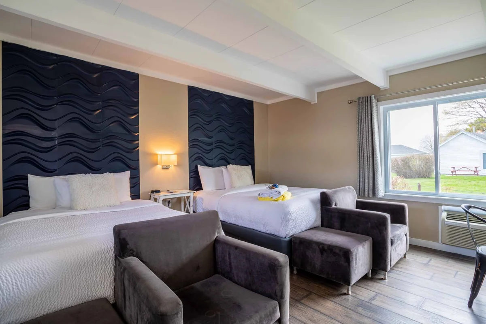
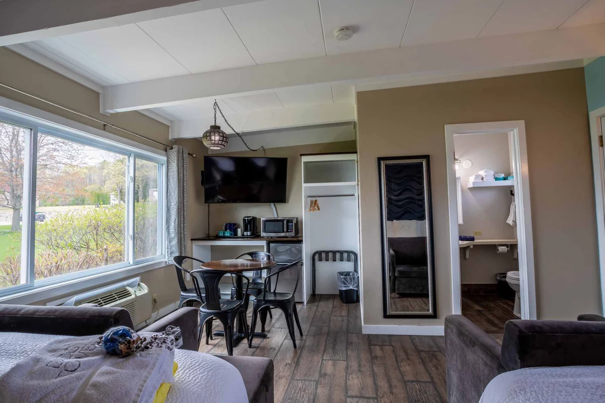
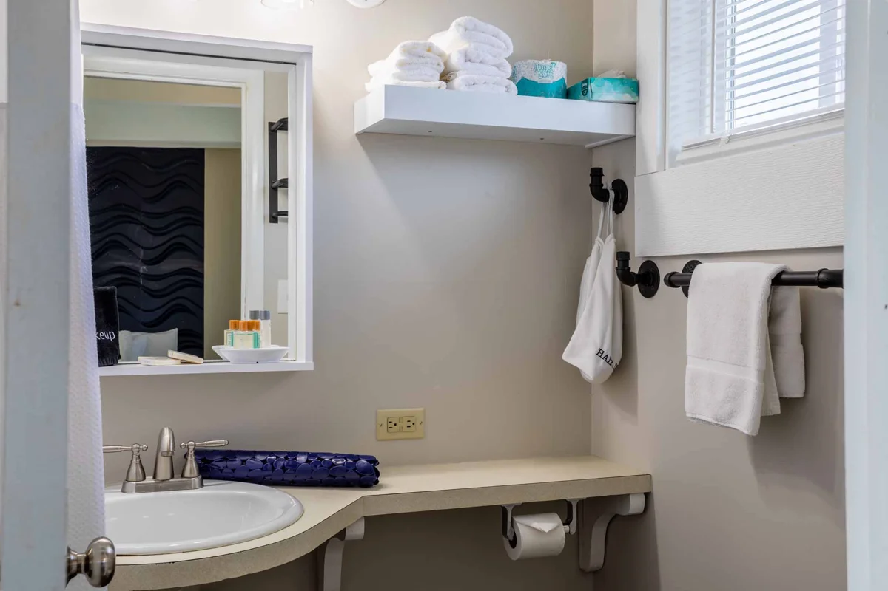

One Saturday night in Door County.도어 카운티에서 토요일 하룻밤.
Two verified options for two adults and two dogs.성인 2명과 반려견 2마리의 예약 가능 여부를 확인한 숙소 두 곳.
Where you’d stay숙소 위치와 주변 장소
Two bases on the Lake Michigan side of Door County. Innlet is in Jacksonport; Beachfront is farther north in Baileys Harbor. Highway 57 connects the towns.두 숙소 모두 Door County의 미시간호 쪽에 있습니다. Innlet은 Jacksonport, Beachfront는 더 북쪽 Baileys Harbor에 있으며, 두 마을은 57번 도로로 연결됩니다.
A / B Hotels · 1–6 Nearby places. Tap a marker for details. Use + / − to zoom; scrolling the page does not zoom the map.A / B 숙소 · 1–6 주변 장소. 표시를 누르면 자세한 정보를 볼 수 있습니다. + / −로 확대·축소하며 페이지 스크롤은 지도 확대에 영향을 주지 않습니다.
Innlet · JacksonportInnlet · Jacksonport
Choose this location for a smaller village base, nearby Lakeside Park, and a drive south to Cave Point.작은 마을, 가까운 Lakeside Park와 남쪽 Cave Point 드라이브를 원할 때 좋은 위치입니다.
6269 Hwy 57, Jacksonport
Jacksonport village base, close to Lakeside Park. Scotty’s Port Pub is on the same property.Lakeside Park 가까운 Jacksonport 마을 숙소입니다. 같은 부지에 Scotty’s Port Pub이 있습니다.
6296 Lake Park Drive, Jacksonport
Nearby lakefront park and sand beach. Park-area marker; check posted beach rules before taking the dogs onto the sand.가까운 호숫가 공원과 모래 해변입니다. 표시는 공원 구역이며, 반려견 해변 출입은 현장 규정을 확인하세요.
6301 Hwy 57, Jacksonport
Village dining near Innlet: seafood, burgers and Mexican dishes. Check current hours and dog seating directly.Innlet 근처 마을 식당으로 해산물, 버거와 멕시코 요리를 제공합니다. 영업시간과 반려견 동반 좌석은 직접 확인하세요.
5360 Schauer Road, Jacksonport
A drive south of Innlet for limestone cliffs, lake views and trails. Leashed dogs welcome; stay back from cliff edges. Marker shows the park area.Innlet 남쪽으로 차를 타고 가는 석회암 절벽, 호수 전망과 산책로입니다. 목줄을 한 반려견 동반 가능. 절벽 가장자리에서 떨어져 걸으세요. 표시는 공원 구역입니다.
Beachfront · Baileys HarborBeachfront · Baileys Harbor
Choose this location for lakefront lodging with restaurants and the brewery along the village’s main street.호숫가 숙소와 마을 중심 도로의 식당, 양조장을 원할 때 좋은 위치입니다.
8040 Hwy 57, Baileys Harbor
On the lake in downtown Baileys Harbor, across Highway 57 from Chives and south of the brewery.Baileys Harbor 중심가 호숫가에 있으며, 57번 도로 건너 Chives, 북쪽에 양조장이 있습니다.
8041 Hwy 57, Baileys Harbor
Dinner directly across Highway 57 from Beachfront; Sunday brunch is also listed. Dog seating is not verified.Beachfront에서 57번 도로 건너편 저녁 식사 장소입니다. 일요일 브런치도 안내되어 있습니다. 반려견 동반 좌석은 확인하지 않았습니다.
8099 Hwy 57, Baileys Harbor
North along the village’s main street: taproom, food and beer garden. Leashed dogs are welcome outdoors, not inside the taproom.마을 중심 도로를 따라 북쪽에 있는 탭룸, 음식과 비어가든입니다. 목줄을 한 반려견은 야외 비어가든만 동반 가능합니다.
2567 Summit Road, Baileys Harbor
Drive inland for separate large- and small-dog areas. Open dawn to dusk. Marker is geocoded to the street address.내륙 쪽으로 차를 타고 가는 반려견 공원으로 대형견·소형견 구역이 나뉩니다. 일출부터 일몰까지 운영. 주소를 기준으로 지도에 표시했습니다.
With the dogs: The Ridges Sanctuary is near Baileys Harbor, but pet dogs are not allowed on its trails. Anclam Park also prohibits dogs on its beach and in the water.반려견 동반: Baileys Harbor 인근 The Ridges Sanctuary 산책로는 반려견 출입이 금지됩니다. Anclam Park도 해변과 물속에 반려견 출입을 금지합니다. The Ridges · Anclam Park
Location research: October 26, 2026. Hotel pins identify the properties, not room entrances. Park pins identify park areas or geocoded addresses. Basemap: OpenStreetMap; north is up. Restaurant hours and outdoor seating can change in late October. Use Directions for current routes and travel times.위치 자료 확인: 2026년 10월 26일. 숙소 표시는 객실 입구가 아닌 숙소 부지입니다. 공원 표시는 공원 구역 또는 주소 기준입니다. 기본 지도: OpenStreetMap, 위쪽이 북쪽입니다. 10월 말 영업시간과 야외 좌석 운영은 변경될 수 있습니다. 최신 경로와 소요 시간은 길찾기를 이용하세요.
JACKSONPORT · 6269 HWY 57
Innlet Motel
Verified through your BringFido link공유해 주신 BringFido 링크에서 확인
King Room with Spa Bath · October 31–November 1 · One night · Two adults and two pets shown at checkout. Checked October 26, 2026; not reserved.스파 욕조가 있는 킹룸 · 10월 31일–11월 1일 · 1박 · 결제 전 화면에 성인 2명과 반려동물 2마리 표시. 2026년 10월 26일 확인, 예약 전.
Photos published in the King Room with Spa Bath gallery associated with your booking. A room number is not specified. The gallery also contains an inconsistent two-bed image, omitted here. Tap photos to enlarge.예약한 객실 유형인 스파 욕조 킹룸 갤러리의 사진입니다. 객실 번호는 지정되지 않았습니다. 같은 갤러리의 침대 2개 사진은 정보가 일치하지 않아 제외했습니다. 사진을 누르면 확대됩니다. Photo source ↗사진 출처 ↗
- Price요금
- $245.74 payable at booking ($196 room + $21.32 service charge + $28.42 tax). Two dogs cost another $30 at check-in. Combined: $275.74 before any tax on the pet fee.$245.74 예약 시 결제(객실 $196 + 서비스 요금 $21.32 + 세금 $28.42). 반려견 2마리 요금 $30은 체크인 시 별도 결제. 합계 $275.74이며 반려동물 요금에 대한 추가 세금은 포함하지 않았습니다.
- Dogs반려견
- Any size; $15 per pet per night. The selected checkout shows two pets. BringFido states that its concierge assigns guests a pet-friendly room.크기 제한 없음, 1마리당 1박 $15. 선택한 결제 전 화면에 반려동물 2마리가 표시됩니다. BringFido는 반려동물 동반 객실 배정을 안내합니다.
- Terms조건
- 100% nonrefundable; full payment today. Check-in 3–8 pm; checkout before 11 am. Room occupancy: two people.100% 환불 불가, 예약 당일 전액 결제. 체크인 오후 3–8시, 체크아웃 오전 11시 전. 객실 정원 2명.
BAILEYS HARBOR · 8040 STATE HWY 57
Beachfront Inn · Room 111
Verified with “Two Dogs” selected at checkout결제 전 화면에서 “Two Dogs” 선택 후 확인
First floor · Two queen beds · October 31–November 1 · One night · Two adults. Room 111 is explicitly dog-friendly. Checked October 26, 2026; not reserved.1층 · 퀸 침대 2개 · 10월 31일–11월 1일 · 1박 · 성인 2명. 111호는 반려견 동반 가능 객실입니다. 2026년 10월 26일 확인, 예약 전.




Photos from the hotel’s dedicated Room 111 page. These show the specific numbered room selected in your booking link. Tap photos to enlarge.호텔의 111호 전용 페이지에 게시된 사진입니다. 예약 링크에서 선택한 특정 객실을 보여 줍니다. 사진을 누르면 확대됩니다. Photo source ↗사진 출처 ↗
- Total총액
- $222.67 including the $159 room, $40 for two dogs, and $23.67 tax. Checkout shows $180.47 due at booking; the remaining $42.20 is due on arrival.객실 $159, 반려견 2마리 $40, 세금 $23.67을 포함해 총 $222.67입니다. 결제 전 화면에는 예약 시 $180.47, 도착 시 잔액 $42.20 결제로 표시됩니다.
- Dogs반려견
- The room-specific checkout accepted “Two Dogs” at $40 per night. The property identifies all first-floor rooms, including 111, as dog-friendly.해당 객실의 결제 전 화면에서 “Two Dogs”를 선택할 수 있으며 1박 $40입니다. 숙소는 111호를 포함한 모든 1층 객실에서 반려견 동반이 가능하다고 명시합니다.
- Terms조건
- One-night bookings forfeit the deposit on cancellation at any time. The checkout says the cancellation cutoff has passed. Check-in 3:30 pm; checkout 11 am.1박 예약은 언제 취소하더라도 보증금이 환불되지 않습니다. 결제 전 화면에는 취소 기한이 지났다고 표시됩니다. 체크인 오후 3시 30분, 체크아웃 오전 11시.
This link selects Room 111 but does not save dates. Set October 31–November 1, two adults, then add “Two Dogs” before booking.이 링크는 111호를 선택하지만 날짜는 저장하지 않습니다. 10월 31일–11월 1일과 성인 2명을 설정하고 예약 전 “Two Dogs”를 추가하세요.